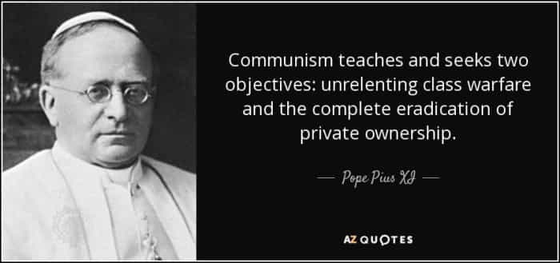
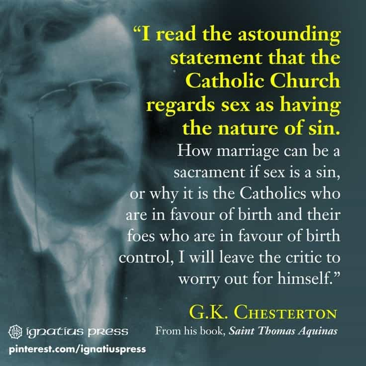
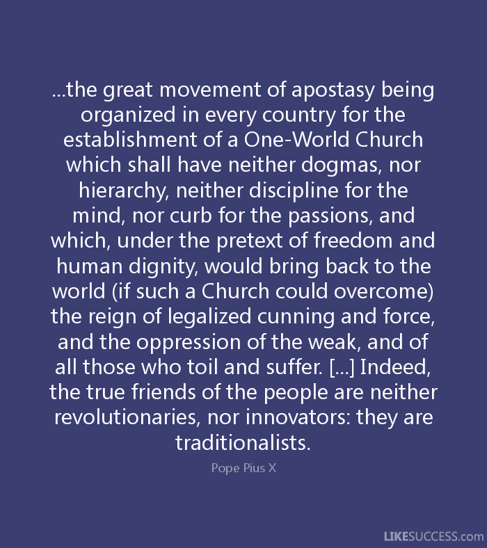

The Virgin Mary, a perfect woman. She is the antithesis to the feminists of our day.
Catholic, Monarchist, Reactionary. When not writing I enjoy the finer things in life such as lifting weights, martial arts, shooting guns, and drinking whiskey.


I have noticed that many people have been falsely conflating what comes out of the Vatican as Catholic. Thus it is my duty to present to the esteemed readers of this fine site the true teachings of the Church which stand, ever more so today, in stark opposition to the rot of cultural Marxism and the effeminacy of the Papal pretenders in Rome.
Vicar of Christ?
It is a dogma of the Catholic faith that the Church cannot substantially change. This means that the church cannot contradict nor change her teaching from what has always been universally taught or has been solemnly defined. Any one who claims to be Catholic and knowingly professes a faith which contradicts a teaching of the Church is considered to be a heretic and is considered to have a removed himself from the Church.
As St. Thomas states: “[one] who disbelieves [even] one article of faith does not have faith, either formed or unformed.” This is known as the unity of faith which means that all Catholics profess the same faith. Likewise it means that heretics cannot hold a clerical office in the Church. Thus if a heretic were to be elected even to the Papacy they could not be considered a legitimate Pontiff because a heretic has separated himself from the Church (source).
Would a real Pope bow to a religion declared false by the Church?
Simply put, you have to be Catholic to be Pope, and the absurdity of a heretic claiming the See of Peter is where we find ourselves today. For just as the institutions in the West have been infiltrated and seized by the enemy, likewise have the institutions of the Church been usurped by apostate forces. The hierarchy currently residing in the Vatican are not legitimate authorities and do not represent the perennial teaching of the Church. Therefore I have listed for your benefit the actual Church’s positions on some current areas of contention.
The only time Francis has ever smiled at a Crucifix
The Catholic Church is vehemently opposed to communism. Without Pius XII valiant efforts, communism would have prevailed over postwar France and Italy. The Pope went so far as to issue the Decree against Communism in 1949 which excommunicated any Christian who professed communist doctrine.
Catholicism is the enemy of Marxism as it teaches that there can be no separation of Church and state, and an atheist government is immoral. Catholicism believes private property is a natural right going so far to say that depriving workers of their wages is a sin which cries to heaven for vengeance (compare that to our socialist tax code!).

The current Muslim invasion of Europe would be met with the utmost resistance. It has always been the Church which has sought to safeguard Catholic Culture and in ages past has gone so far as to issue a call to arms against non-Catholics who have sought to destroy it.
Pope Urban II issued the Crusades and Pope Leo the great even went so far as to personally travel into the heart of the Hun army—to Attila himself—to deliver Rome from the sack that was to come. In 1571, St. Pope Pius V formed the Holy League that would go on to defeat the great Muslim Turkish Armada that was plaguing the Mediterranean.
“Then I pointed like so and told them where to take their cultural enrichment”
The tradition of the Church has been to unite the West against external non-christian threats in order to preserve Western Christian culture.
“The natural law enjoins us to love devotedly and to defend the country in which we were born, and in which we were brought up, so that every good citizen hesitates not to face death for his native land…. We are bound, then, to love dearly the country whence we have received the means of engagement this mortal life affords.” – Sapientia Christiana Encyclical Pope Leo XIII
So what is the real teaching of the Church in regards to abortion and contraception? The teaching is any member who has an abortion or supports abortion is automatically excommunicated from the Church. That’s right: every single Democrat who claims to be Catholic is actually excommunicated, including Nancy Pelosi who likes to sanctimoniously drone how she is a good Catholic grandmother.
Contraception is also considered a mortal sin because it is an unnatural stoppage of life.
“Hence, after the sin of homicide whereby a human life already in existence is destroyed, this type of sin appears to take next place, for by it the generation of human nature is impeded.” -St. Thomas Aquinas.

I know this is unpopular with the readers, but the teaching is that those who engage in contraception have already committed murder in their heart. Contraception is what allows people to engage in recreational sex, because the natural end of sex has been set aside so too then has the institution of marriage, whose end is children.
Likewise, because we have committed murder in our hearts, we have become a petulant, immature, vain, and a sterile people similar to any other people who have taken the risk from reward or the consequences from pleasure. This is the most difficult pill to swallow.
The Church condemns feminism in the strongest terms. There cannot exist feminism without birth control.
“…any use whatsoever of matrimony exercised in such a way that the act is deliberately frustrated in its natural power to generate life is an offense against the law of God and of nature, and those who indulge in such are branded with the guilt of a grave sin.” -Pius XI Casti Cannubi
The Church asserts that Man is the head of the household and that a woman finds her vocation from being a good mother and housewife:
“This … does not deny or take away the liberty which fully belongs to the woman both in view of her dignity as a human person, and in view of her most noble office as wife and mother and companion; nor does it bid her obey her husband’s every request if not in harmony with right reason or with the dignity due to wife; … For if the man is the head, the woman is the heart, and as he occupies the chief place in ruling, so she may and ought to claim for herself the chief place in love.” -Ibid
The Pope has even gone so far as to condemn women’s suffrage:
“Woman can never be man’s equal and cannot therefore enjoy equal rights. Few women would ever desire to legislate, and those who did would only be classed as eccentrics.” -St. Pius X
The Catholic Church is not simply just a religion of love and mercy. Christianity is not a weak religion, for our God is a God of Battles. Catholic Tradition encourages us to live our lives in the manner of our Lord Jesus who spoke of the struggle that his Church would have to endure.
“Do not think that I am come to send peace upon earth: I came not to send peace, but the sword.”-Mathew 10:34
Christians are not meant to sit idly as bystanders to the great struggle of good and evil in this world.
“For our wrestling is not against flesh and blood: but against principalities and power, against the rulers of the world of this darkness: against the spirits of wickedness in the high places.” -Ephesians 6:12
My dearest readers: do not look to the impostors in Rome as legitimate authorities of the Church. Cling to tradition instead!

If we know what the faith is then conversely we can also know what it isn’t and by keeping the faith we may also keep the virtues of hope and charity. God Bless!